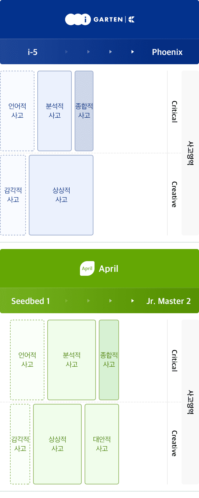
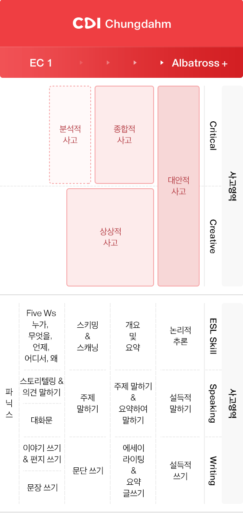
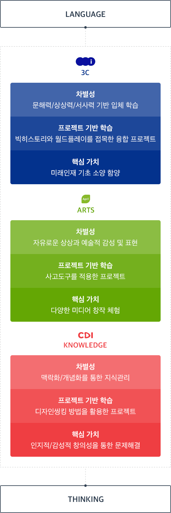

통합로드맵
ESL 창의사고 교육의 첫걸음에서 완성까지 청담어학원, April어학원과 아이가르텐의 통합로드맵입니다.



LANGUAGE
CULTURE
- 차별성
- 상상/몰입/통합을 통한 상상력/표현력 계발
- 프로젝트 기반 학습
- 월드플레이 이론을 접목한 프로젝트
ARTS
- 프로젝트 기반 학습
- 사고도구를 적용한 프로젝트
KNOWLEDGE
- 프로젝트 기반 학습
- 디자인씽킹 방법을 활용한 프로젝트
- 핵심 가치
- 인지적/감성적 창의성을 통한 문제해결
THINKING